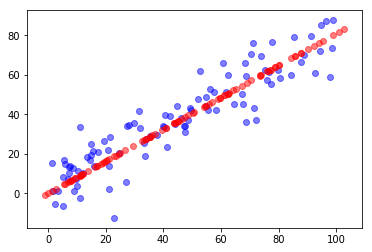
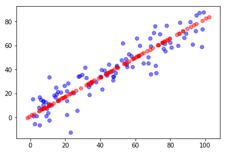
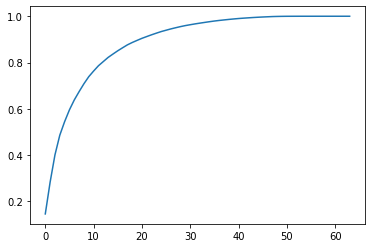
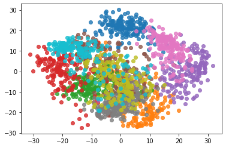

# 实验 7: PCA
# 7-5
该实验采用 playML 及 sklearn 执行 PCA，具体结果及感受如下：
采用 playML ，运行 PCA，寻找 100 个 2 维坐标点对应的特征向量，将其降维到 1 维空间得到的结果如下：

可以看出，点在一维线段上的分布趋势与点在二维平面中的密集程度相一致。
采用 sklearn 运行 PCA 的结果与之相同：

# 7-6
第二个实验是将一个具有 1347 个数据点的 64 维数据采用 KNN 进行聚类，通过将直接聚类和采用 PCA 降维进行预处理后聚类进行对比，得到 PCA 在聚类问题中的意义。
实验过程中的第一个输出是训练集中数据数目与 PCA 方差的关系。根据此数据，可以观察到只需要选取原数据集中约 28 个点，即可达到 PCA95% 准确性的置信区间。这样可以减小了 PCA 的输入数据数量，但 PCA 本身效率已经足够高，因此感觉意义不大。

实验过程中的第二个输出是是否采用 PCA 进行预处理，最终采用 KNN 进行聚类的结果评估。结果显示，若不采用预处理，则在 sklearn 中 KNN 优劣的评价只有. 而若采用 PCA 预处理，则 KNN 最终评价达到了. 可以看出采用 PCA 可以显著提高 KNN 的聚类效果。
下图是采用 PCA 进行预处理的 KNN 聚类最终结果：

可以看出，该聚类的可视化仍然存在一定的问题。一个主要的问题是其中部分类仍然难以在二维中分辨，例如表示为棕色与黄绿色的类。(猜测这个数据集就是 MNIST)
所以相比于 t-SNE 等新方法，PCA 降维到二维的效果仍然不够理想。但 PCA 的效率足够高，作为部分算法的预处理仍然具有重要的作用。